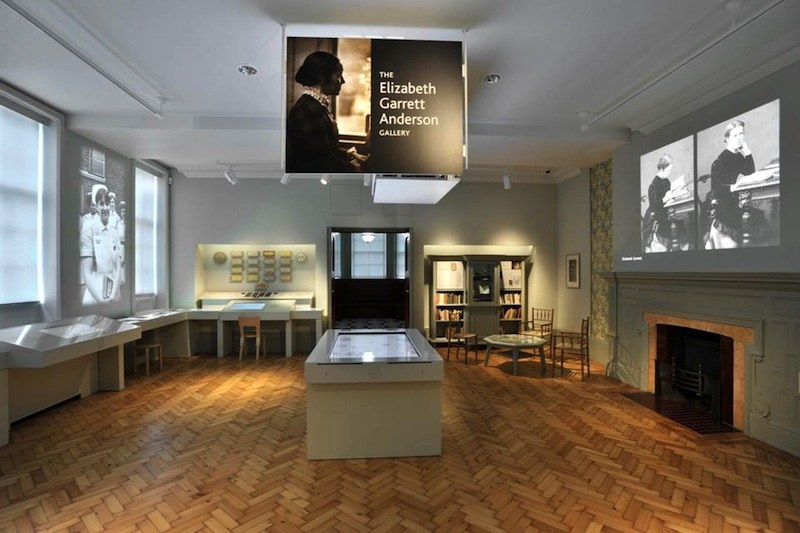

EGA for Women
A lasting memorial in the Elizabeth Garrett Anderson Gallery at the UNISON Centre
Elizabeth Garrett Anderson was the first woman to train as a doctor in the UK.
She had political flair, medical skill, administrative and fundraising ability, independence of mind, honesty and kindness. She set the standard for women doctors and gave women a choice.

Our aim to preserve and restore the former Elizabeth Garrett Anderson Hospital building has been realised. It stands as a fitting memorial to EGA’s life and work in recognition of her enormous contribution to the history of women in the UK.
After a successful fundraising effort by Elizabeth Garrett Anderson, the New Hospital for Women founded by her in 1872 was opened in architect designed premises in 1890, a year after building started.
For a century it was a hospital run exclusively by women for women. Elizabeth refused to allow her name to be used whilst she was alive, but following her death in 1917, the hospital was renamed in her honour.
Our vision for a permanent exhibition devoted to the contribution and achievement of Elizabeth Garrett Anderson, the first woman doctor to train in this country, has been fulfilled thanks to the generous support of UNISON.